The manual optimizer shows your stone many times over, side by side, each with a slightly different crown height and pavilion depth, so you can compare them by eye and pick the proportions that look best. Every version is your own design made taller or flatter the same way Tangent ratio height scaling does it: each facet turns and moves so all its meets still meet, and the girdle's outline, the table's size and the index teeth stay as they are. Under the grid, a tilt performance graph shows how much light the stone you picked returns as it tilts.
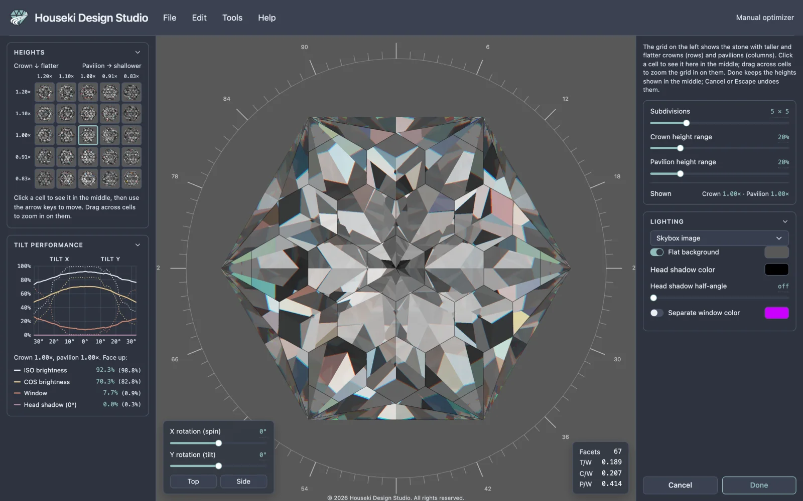
Choose Edit > Manual optimizer from the menu bar.
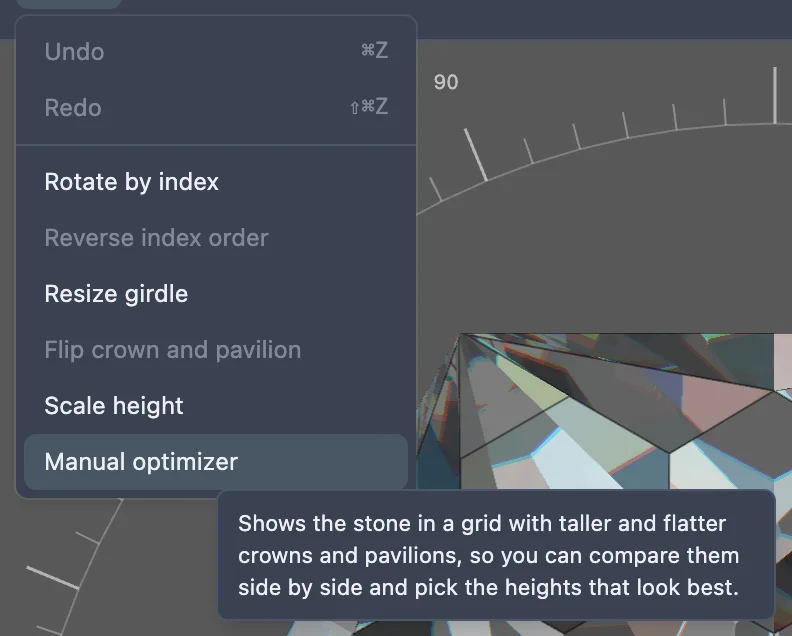
The menu item is greyed out, with a tooltip saying why, when there's no design loaded (a plain
.obj mesh has no facets to re-cut), or when another mode — editing a tier, scale
height, resize girdle, the cutting assistant or tilt performance — is already open. Finish or
leave that mode first, then open the manual optimizer.
The top bar's mode readout, at its right-hand end, reads Manual optimizer while it's open.
Each row is a crown height and each column a pavilion depth, both written as a multiple of your design's own: 1.20× is 20% taller, 0.83× about a sixth flatter.
Every picture in the grid shows its stone face up, looking straight down on the table, the way a stone is usually judged. Turning or zooming the stone in the middle leaves the grid as it is.
The grid fills in a few cells at a time, the middle first and then outwards; a bar under it counts the cells still being drawn, and you can use the grid while it fills. The cells are drawn with the Deterministic renderer, so they arrive quickly and without noise.
So that the stone in the middle looks like the pictures in the grid, opening the optimizer switches the renderer to Deterministic if you were using Monte Carlo or Flat. Leaving it, with Done, Cancel or Escape, switches back to the renderer you had. The switch isn't a change to your design, so Undo doesn't step through it, and it doesn't change the renderer the studio remembers for next time.
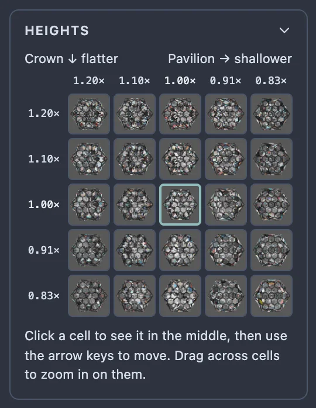
The pictures are small in a narrow pane, and at 9 or 11 subdivisions too small to judge a stone by, with the heights along the top too cramped to read. Drag the edge between the grid and the stone to the right to make the pane, and every picture in it, bigger.
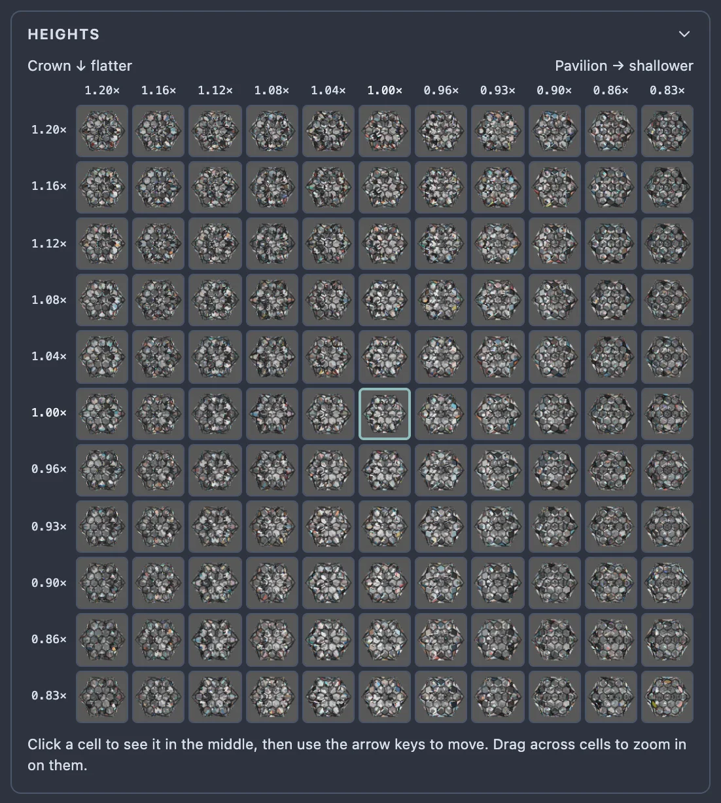
Under the grid is the Tilt performance graph of the stone in the middle: the same graph, measured the same way, as the Tilt performance analyzer draws. The stone is tilted from face up out to 33° one way (Tilt X, the left half) and then the other (Tilt Y, the right half), and the curves show how bright it looks at each tilt with even light (ISO) and with light from behind you (COS), how much of it windows, and how much of its light your head blocks. A solid line is the whole stone, a dotted one the table alone.
Under the graph are the heights it was measured for, and each curve's value face up: the whole stone's, then the table's alone in brackets.
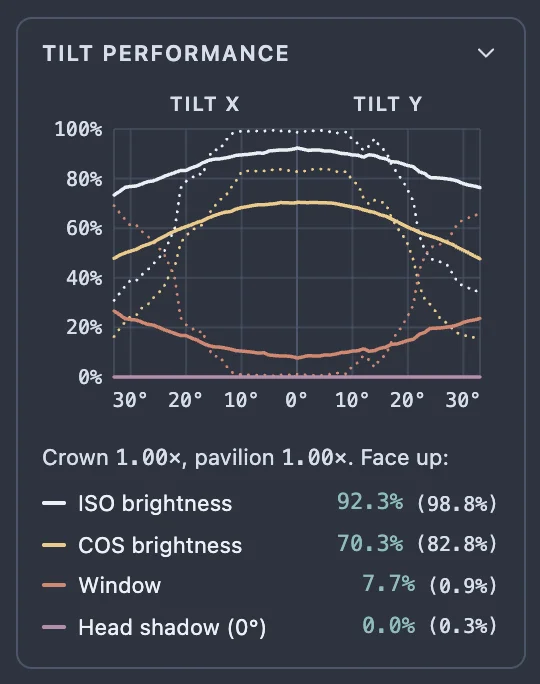
Point at the graph to read it at any tilt, as in the Tilt performance analyzer: a line follows the pointer with a dot on each curve, the line under the graph names the tilt (for example Tilt X 20°), and each curve's value at that tilt replaces its face-up value, the table's in brackets. The point on the graph nearest the pointer, on any curve, solid or dotted, is ringed with its value written beside it in its curve's colour (a dotted curve's in brackets), so you can read a value straight off the curve you are pointing at. Move the pointer off the graph and the ring goes and the values go back to face up. Pointing doesn't turn the stone in the middle, which stays as you left it. While the graph is being measured again, pointing at it does nothing.
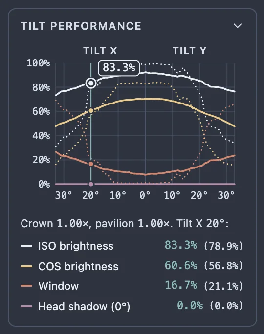
When you pick other heights, by clicking a cell, moving with the arrow keys or dragging across cells, the graph is measured again for the new stone once you stop, which takes a second or two; until then the last graph stays up, faded, and the line under it reads Measuring…. Clicking or arrowing from cell to cell quickly, or holding an arrow key down, only measures the one you stop on, and going back to heights already measured shows their graph at once. A change to the Head shadow half-angle measures it again too.
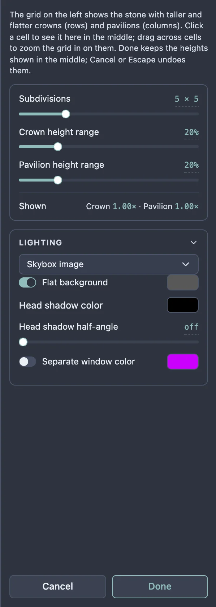
Drag a slider and the grid changes when you let go; or click its reading to type an exact value, and press Enter. With a slider focused, the arrow keys move it a step at a time (one step of Subdivisions is to the next odd number: 3 to 5, 5 to 7, and so on up to 11).
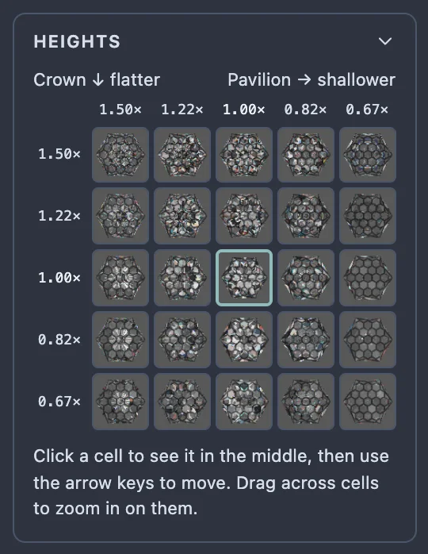
The Lighting card is the render settings' own Lighting section: the lighting model, Flat background, Head shadow color, Head shadow half-angle and Separate window color. They are the same settings, not a copy of them: a change here lights the stone in the middle and every picture in the grid, and is still there in the render settings after you leave the optimizer. The grid redraws a moment after you change one.
Click any cell and the stone in the middle changes to that cell's heights, drawn at full size, so you can look at it closely, turn it and compare it with the others. The grid itself stays as it is, so you can click from cell to cell. The tilt performance graph is measured again for the stone you clicked.
Clicking a cell also puts the grid's keyboard cursor, a ring, on it. From there the arrow keys move from cell to cell, and the stone in the middle follows each step straight away, just as if you had clicked the cell (see From the keyboard below).
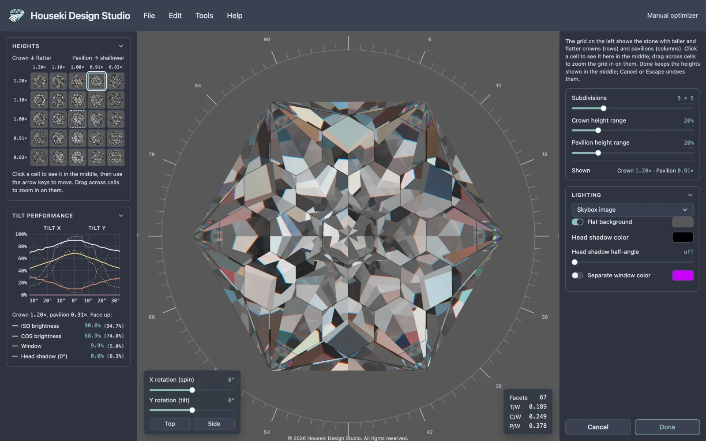
Press on one cell and drag to another, and the cells between them are lit as a rectangle. When you let go, the grid zooms in on that rectangle: its top-left cell becomes the grid's new top-left (the tallest stone), its bottom-right cell the new bottom-right (the flattest), and the grid is centred on the rectangle's middle. The subdivisions stay the same, so the same number of pictures now covers a narrower spread of heights, and the two range sliders show the new spreads. The stone in the middle changes to the new centre.
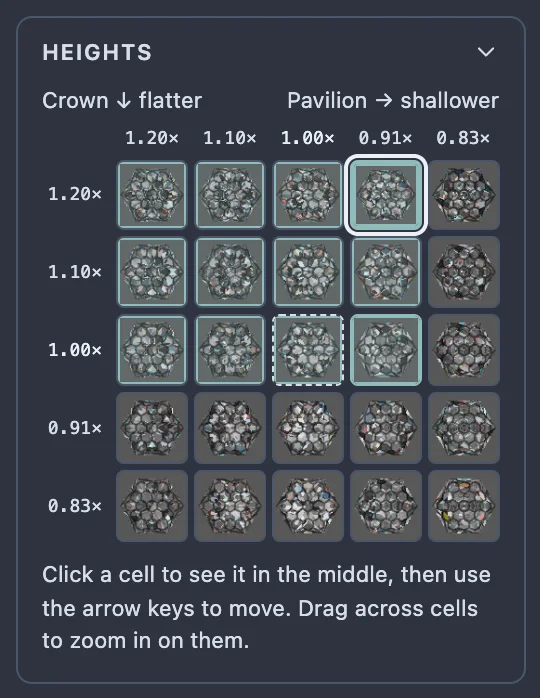
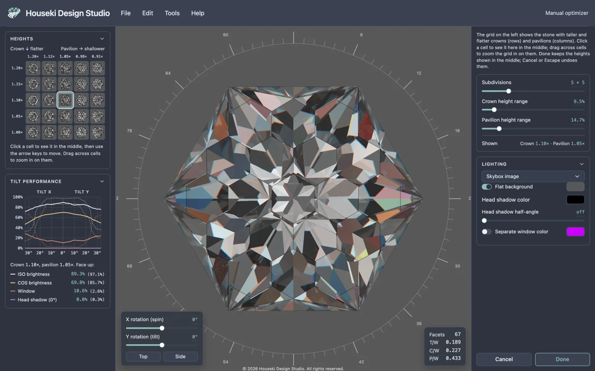
A rectangle with an even number of rows or columns has its middle between two cells; the new centre is then half-way between their heights. A rectangle only one column wide leaves every column the same pavilion depth (a pavilion range of 0%), and one row tall every row the same crown height; raise the range slider again to spread them out.
To go back to a wider grid, use Undo (below), or raise the range sliders.
The grid has a keyboard cursor: a ring round one cell, the cell the stone in the middle shows. Click a cell, or Tab to the grid, and the arrow keys work on the grid. If nothing else has the keyboard, the first arrow key you press just brings the cursor to the grid, on the cell shown, without changing anything; the next ones move it.
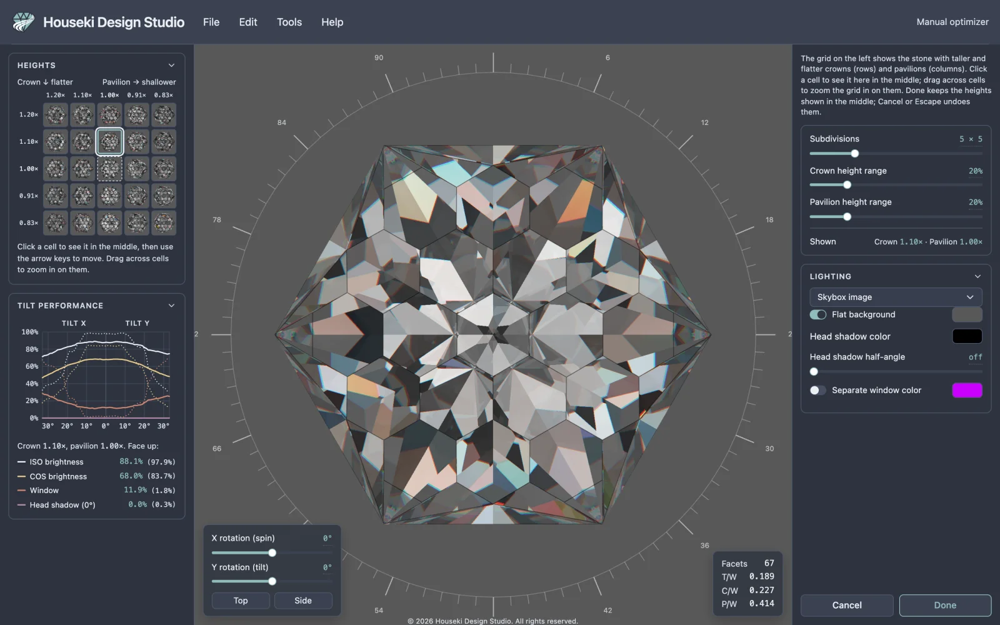
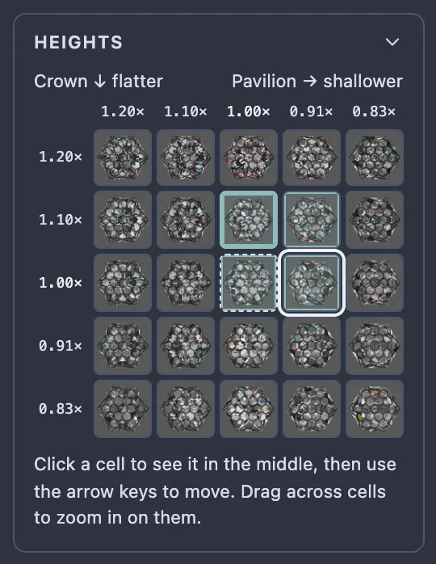
While the cursor is in the grid, these keys work only on the grid: they don't turn the stone, move through the cutting instructions or trigger anything else in the studio.
While the manual optimizer is open, the cutting instructions are hidden and the design can't be edited any other way: it holds the whole design until you leave with Done, Cancel, or Escape.
Changes to the Lighting settings are kept either way: they are render settings, not part of the design. Whichever way you leave, the renderer goes back to the one you had before you opened the optimizer.
While the optimizer is open, Undo and Redo — the Edit menu's items, and Cmd+Z / Ctrl+Z and Shift+Cmd+Z / Ctrl+Shift+Z (or Ctrl+Y) — step through your changes in the optimizer, one at a time: each cell clicked, each rectangle, and each slider let go or value typed. Moving through the grid with the arrow keys is one step however many cells you cross, so one Undo takes you back to the cell you started from; a click, a rectangle or a slider starts a new step. Undoing a rectangle brings the wider grid back.
After Done, the whole session is one step of the studio's own Undo: Cmd+Z / Ctrl+Z puts the design back as it was before you opened the optimizer, however many cells you clicked on the way.
| Gesture / key | Where | Does |
|---|---|---|
| Click | Edit > Manual optimizer | Opens the manual optimizer |
| Click | A cell of the grid | Shows that cell's heights in the middle and puts the keyboard cursor on it; the grid stays |
| Drag from one cell to another | The grid | Zooms the grid in on the cells between them |
| ↑ ↓ ← → | The grid | Moves the keyboard cursor one cell and shows that cell's heights in the middle; stops at the edges |
| ↑ ↓ ← → | Anywhere with nothing else focused | Brings the keyboard cursor to the grid, on the cell shown; changes nothing |
| Tab | The page | Moves the focus to the grid's cursor cell |
| Point | The tilt performance graph | Shows each curve's value at the tilt under the pointer, and rings the point nearest the pointer with its value |
| Shift+arrow keys, then let go of Shift | The grid | Lights a rectangle from the cursor's cell, then zooms the grid in on it |
| Escape with Shift held | The grid, while growing a rectangle | Drops the rectangle |
| Drag | The edge between the grid and the stone | Makes the grid's pane, and its pictures, wider or narrower |
| Drag, or ← → | Subdivisions slider | 3, 5, 7, 9 or 11 pictures a side |
| Drag, or ← → | Crown height range, Pavilion height range | The spread of heights, 0% to 100%, 1% a step |
| Click | A slider's reading | Opens a text box to type an exact value; Enter applies it |
| Drag, scroll, Top, Side | The stone in the middle | Turns or zooms the stone; the grid stays face up |
| Click | Done | Keeps the heights shown, as one step of Undo, and leaves |
| Click | Cancel | Puts the design back and leaves |
| Escape | Anywhere, outside a text box | The same as Cancel |
| Cmd+Z / Ctrl+Z | Anywhere, outside a text box | Undo: the optimizer's last change while it is open, the whole session after Done |
| Shift+Cmd+Z / Ctrl+Shift+Z, or Ctrl+Y | Anywhere, outside a text box | Redo |